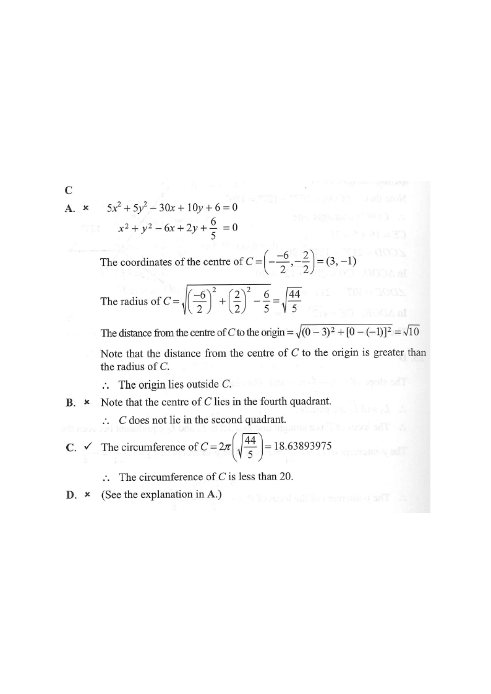

The equation of the circle $C$ is
$$5x^{2}+5y^{2}-30x+10y+6=0\,.$$
Which of the following is true?

Divide the whole equation by the coefficient of $x^2$,
namely 5:
Now the circle is in the form $x^{2}+y^{2}+Dx+Ey+F=0$ with $D=-6$, $E=2$, $F=\dfrac{6}{5}$.
Centre:
$$\left(-\frac{D}{2},-\frac{E}{2}\right)=\left(-\frac{-6}{2},-\frac{2}{2}\right)=(3,-1)$$Radius:
$$r=\sqrt{\left(\frac{D}{2}\right)^{2}+\left(\frac{E}{2}\right)^{2}-F} =\sqrt{3^{2}+(-1)^{2}-\frac{6}{5}}=\sqrt{\frac{44}{5}}$$So $r=\sqrt{8.8}\approx 2.9665$.
Option D claims the centre is $(15,-5)$.
But the centre is $(3,-1)$,
so D is false ✗.
In fact $15$ and $-5$ are $-\frac{D}{2}\times 5$ style misreadings — the correct centre is found by the formula in STEP 2.
Distance from the centre $(3,-1)$ to the origin $(0,0)$:
$$d=\sqrt{(3-0)^{2}+(-1-0)^{2}}=\sqrt{9+1}=\sqrt{10}\approx 3.1623$$Compare with the radius $r=\sqrt{\frac{44}{5}}=\sqrt{8.8}\approx 2.9665$:
$$d=\sqrt{10}>\sqrt{8.8}=r$$Since the origin is farther from the centre than the radius,
the origin lies outside $C$. A is false ✗
The centre is $(3,-1)$: $x>0$, $y<0$, so the centre lies in the fourth quadrant.
The circle spans $x$ from $3-r\approx 0.03$ to $3+r\approx 5.97$ and $y$ from $-1-r\approx -3.97$ to $-1+r\approx 1.97$ — it is mostly in the fourth quadrant and touches the first quadrant near the origin.
So $C$ does not lie in the second quadrant. B is false ✗
Circumference:
$$2\pi r = 2\pi\sqrt{\frac{44}{5}} \approx 2\pi(2.9665)\approx 18.6389$$Since $18.6389<20$,
the circumference is less than 20. C is true ✓
Final answer: C
Centre $=(3,-1)$, radius $=\sqrt{\tfrac{44}{5}}\approx 2.97$; circumference $\approx 18.64 < 20$.
A ✗ origin outside ( $\sqrt{10}>\sqrt{8.8}$ ) · B ✗ centre is in quadrant IV · C ✓ · D ✗ centre is $(3,-1)$
Question. The equation of the circle \\(C\\) is \\(4x^{2}+4y^{2}+8x-24y+9=0\\).
(a) Find the centre and radius of \\(C\\).
(b) Determine whether the origin lies inside \\(C\\).
(c) Is the circumference of \\(C\\) greater than \\(17\\)?